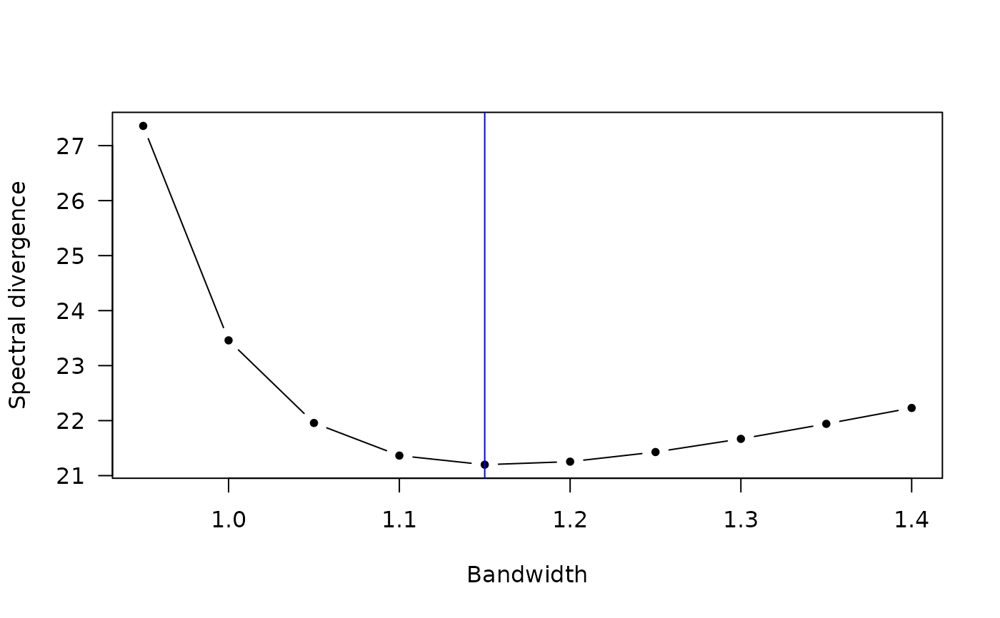

Bandwidth selection procedure for kernel spectral density estimator
Source:R/bandwidth.R
select_band.RdBandwidth selection procedure for kernel spectral density estimator
Usage
select_band(
ppp,
inten.formula = NULL,
data.covariate = NULL,
a = 0.025,
band.range,
correct = TRUE,
A1 = NULL,
A2 = A1,
endpt = 1.5,
equal = TRUE,
kern = bartlett_uni
)Arguments
- ppp
A point pattern of class
"ppp".- inten.formula
A
formulasyntax in character format specifying the log-liner model for the intensity function, which is passed toppm(). The default is constant intensityinten.formula = "~1".- data.covariate
Optional. The values of spatial covariates passed to the
dataargument inppm().- a
Taper coefficient, a value within unit interval. If
a = 1, then taper is not applied.- band.range
Numeric vector. Search space for the optimal bandwidth.
- correct
Logical. If
TRUE(default), conduct edge correction when computing the kernel spectral estimator.- A1, A2
Optional. Side lengths of the observation window.
- endpt
A positive value indicating the scale factor of the endpoint frequency.
- equal
Logical. Whether to use the same bandwidth for both x and y axis. The default is
TRUE.- kern
Univariate scaled kernel function. The default is Barlett kernel.
Examples
library(spatstat)
lam <- function(x, y, m) {(x^2 + y) * ifelse(m == "A", 2, 1)}
set.seed(227823)
spp <- rmpoispp(lambda = lam, win = square(5), types = c("A","B"))
b <- seq(0.95, 1.4, 0.05) # You may use finer grid to search optimal bandwidth
cv <- select_band(spp, inten.formula = "~ x + y", band.range = b)
cv$OptimalBandwidth # Print the optimal bandwidth
#> Bandwidth
#> 1.15
plot(cv$Result[1,], cv$Result[2,], type = "b", pch = 20, las = 1,
xlab = "Bandwidth", ylab = "Spectral divergence")
abline(v = cv$OptimalBandwidth, col = "blue")
